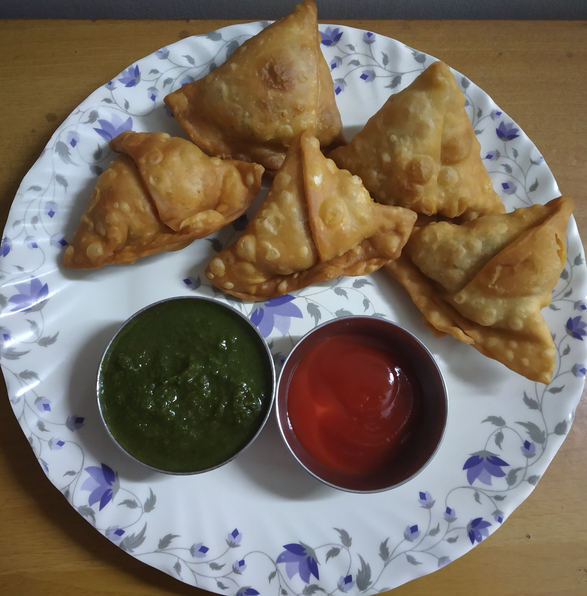

SAMOSA
In frame is samosa ,a fried or baked pastry with a savory filling, such as spiced potatoes,
onions, peas, cheese, beef and other meats, or lentils.
It may take different forms,
including triangular, cone, or half-moon shapes, depending on the region.
INGREDIENTS :
Refined oil,maida
chopped potato,peanuts,onion
Ginger and garlic paste,garam masala,turmeric powder,dhaniya powder,jeera powder,chat masala
salt
STEPS ONE CAN FOLLOW(if needed) :
First add oil then add chopped onion and ginger & garlic paste to the pan
Then add chopped potato and cook it well and cool that down
Then make samosas or give shapes and fry them in the oil
serve it with chutneys